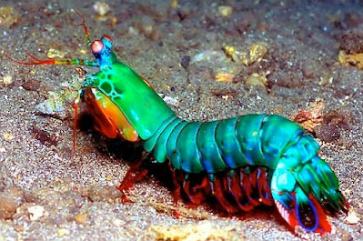
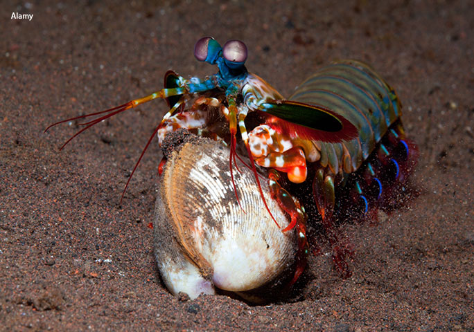

Fatos sobre o Stomatopoda
Informações gerais
Stomatopoda ou estomatópode (nome científico: Odontodactylus scyllarus), chamados popularmente de tamarutacas ou de lacraias-do-mar no Brasil, é uma ordem de crustáceos marinhos da subclasse Hoplocarida, que agrupa cerca de 400 espécies, caracterizadas principalmente pela morfologia da segunda pata torácica, que é modificada em apêndice subquelado, lembrando uma pata de louva-a-deus.
Classificação científica:
| Reino: | Animalia |
| Filo: | Arthropoda |
| Subfilo: | Crustacea |
| Classe: | Malacostraca |
| Subclasse: | Hoplocarida |
| Ordem: | Stomatopoda |
Visão
Nossos olhos possuem três tipos desses receptores - que correspondem à luz azul, verde e vermelha -, que nos permitem perceber o espectro de cores que vemos. Os cães contam com apenas dois tipos de cones (verde e azul), e é por isso que eles vêm tons de azul, verde e um pouco de amarelo. Muitos anfíbios, répteis, aves e insetos possuem quatro tipo de cones, o que significa que espécies dessas classes conseguem ver cores que o nosso cérebro é incapaz de processar. Algumas espécies específicas de borboletas e possivelmente pombos possuem cinco cones de percepção de cor, o que aumenta ainda mais a quantidade de pigmentos que eles são capazes de perceber. O sistema de visão dos estomatópodes possui doze cones sensíveis à luz e outros quatro que filtram a luz (16 cones no total), o que lhes permite ver cores polarizadas e imagens multiespectrais.
Golpe sônico
As maiores esmagadoras, tais como exemplares de Odontodactylus scyllarus, são capazes de desferir um dos mais rápidos e violentos golpes do reino animal, um soco que pode apresentar a velocidade de um tiro calibre .22 (equivalente a 720 km/h) e uma pressão de impacto de 600 N/cm². Essa força esmagadora é a responsável pelo seu título de "lagosta-boxeadora" e é capaz de facilmente quebrar a carapaça de um caranguejo, as conchas duras e calcificadas de gastrópodes ou até mesmo quebrar o vidro reforçado de um aquário.
